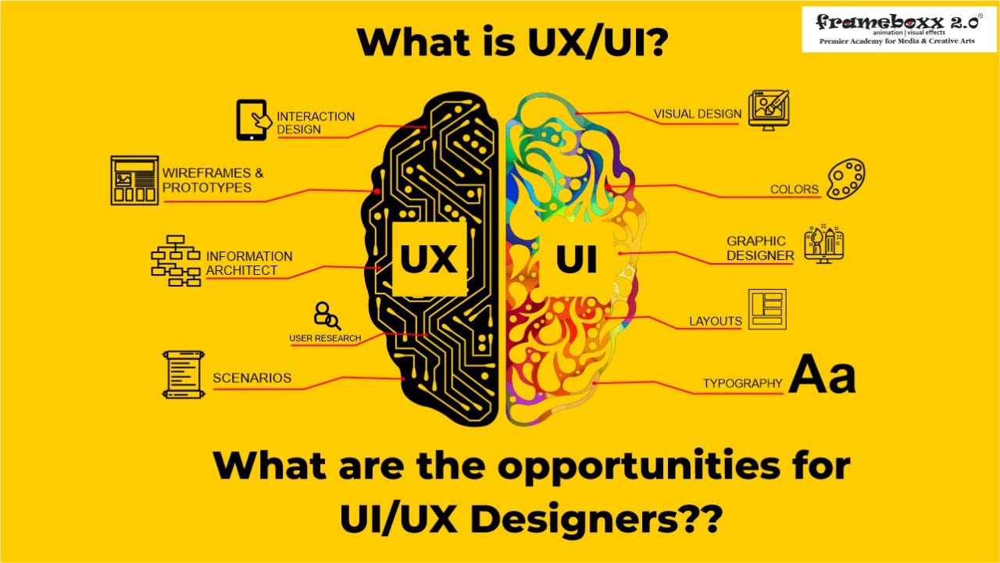
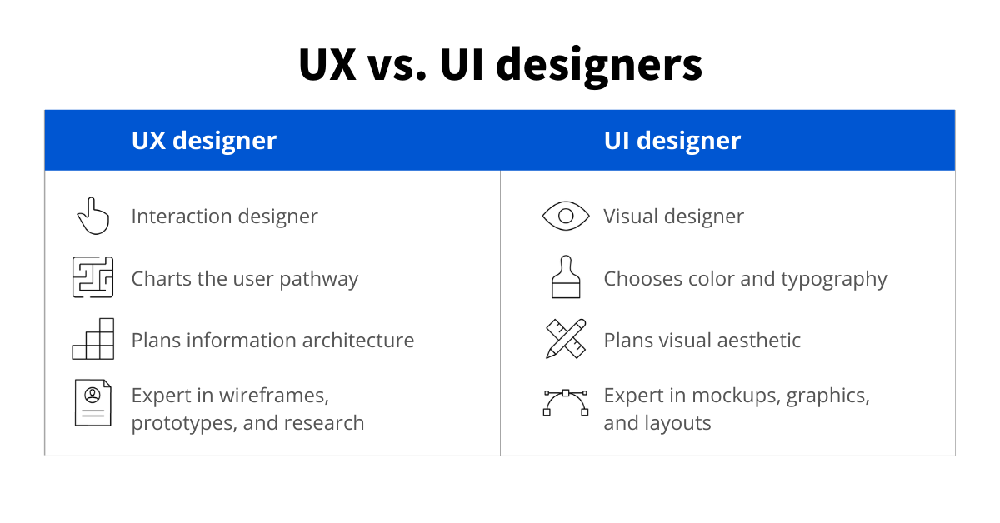
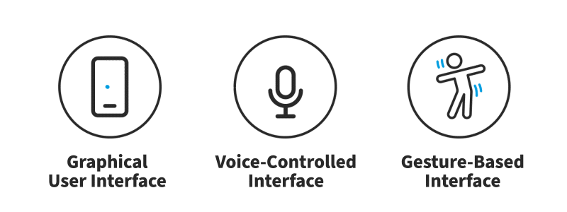

UI (User Interface) is the look and feel—buttons, colors, layouts—while UX (User Experience) is the overall feeling and ease of use, covering the entire journey from start to finish, making them distinct but related fields that ensure a product is both visually appealing and functional. Think of UI as the stylish car's dashboard and controls, and UX as the smooth, comfortable, and intuitive ride you get from driving the car.
The visual and interactive elements users see and touch.
The Colors, fonts, page layout, buttons, icons, and responsiveness.
The To create an aesthetically pleasing, consistent, and easy-to-navigate interface.
The entire process and feeling a user has when interacting with a product.
User research, information architecture, wireframing, prototyping, and testing.
To make a product useful, efficient, enjoyable, and solve user problems.


interfaces are the access points where users interact with designs. They come in three formats:

: Users interact with visual representations on digital control panels. A computer’s desktop is a GUI.
Voice-controlled interfaces (VUIs):
Users interact with these through their voices. Most smart assistants, E.g., Siri on iPhone and Alexa on Amazon devices—are VUIs.
Users engage with 3D design spaces through bodily motions—e.g., in virtual reality (VR) games. To design UIs best, you should consider: Users judge designs quickly and care about usability and likeability. In this video, Frank Spillers, Service Designer, and Founder and CEO of Experience Dynamics, explains how Google’s Material Design principles, such as clarity, contrast, and visual consistency, help designers create interfaces that are intuitive, accessible, and enjoyable for users to interact with.